Pipeline
Rulepacks decide, incremental checks verify. Only what changed is recomputed, so it stays light enough to run every day and shows exactly what differs from yesterday.

Laws and rates are data, not code. Rulepacks are versioned by year and half, carry an effective date and a source, and own the rounding rules. When the law changes, data changes rather than code, and every decision can be traced to the rulepack that produced it.
On the media side the pipeline runs as one autonomous monitoring tick: verify, detect, suppress, prepare a plan. It never executes. Execution opens only for a plan a person approved, and on failure it restores recorded values.
Incremental verification recomputes only what changed. The same input as yesterday must yield yesterday's result; a different result is itself a signal.
Want to hold this layer?
From experiment to execution, together.
Contact